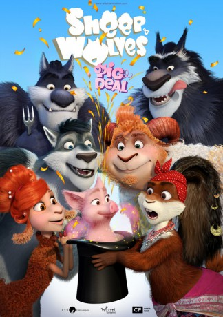

#11477 Völlig von der Wolle: Schwein gehabt!
 
 IMDB-Wertung: 5.5 / 10
IMDB-Wertung: 5.5 / 10  Metascore: 0
Metascore: 0 
The united town of sheep and wolves lives a peaceful and quiet life until two unexpected guests turn up - a polar fox and a tiny ewe. No one ever expected them to bring a deadly danger, which can be overcome only if they work together. Only teamwork can solve big problems and deal with serious challenges - as there is strength in unity.
Jahr: 2019
Dauer: 74 Minuten
FSK: 6
Land: Russland Studio: Koch MediaTonspuren:
Untertitel: Deutsch,
Auflösung: 1080p (1920x808) Größe: 3665 MB
Genre: Komödie, Abenteuer, Animation/Trick, Familie
Regisseur: Vladimir Nikolaev
Drehbuch: Robert Lence, Vladimir Nikolaev, Anton Timofeev, Aleksey Tsitsilin
Soundtrack: Benjamin Zecker
Darsteller:
- Vladimir Chuprikov als
- Graham Halstead als Grey
Datei: X:\Kinder Collections\Völlig von der Wolle\Völlig von der Wolle Schwein gehabt! (2019, FSK6, 1920x808).mkv seit 13.07.2019
Festplatte: Kinder-Filme+Trick
 Alle Filme aus Gruppe 'Kinder Collections\Völlig von der Wolle'
Alle Filme aus Gruppe 'Kinder Collections\Völlig von der Wolle'